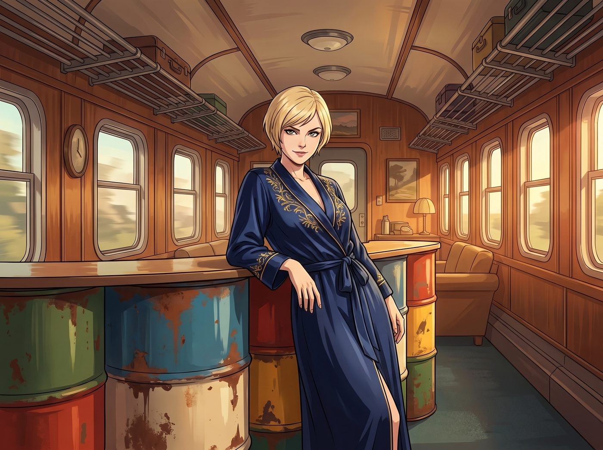
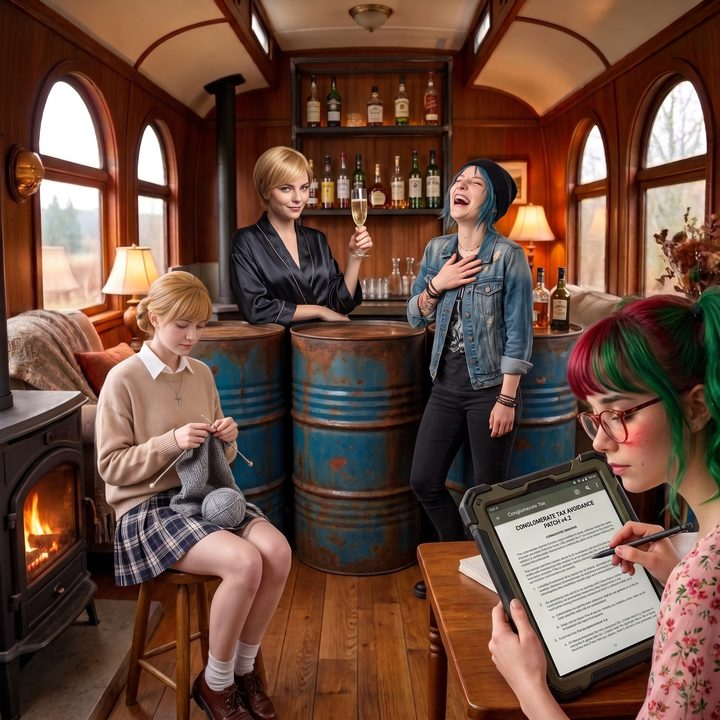

家主的籌碼


這一天，二號車廂那台平時只用來訂外賣的座機，響起了代表著最高級別加密通訊的專線鈴聲。
打來的是 Chase 財團董事會的首席法律顧問，也是 Victoria 父親的得力心腹。自從西雅圖物流巨頭被合規核爆、華盛頓州氣象局差點被集體訴訟的消息傳回東海岸的頂級富豪圈後，Chase 家族的長輩們終於意識到，他們那個原本被流放到鄉下搞藝術的叛逆女兒，手裡居然握著一張能讓整個華爾街膽寒的行政戰略威懾牌。
電話那頭的語氣充滿了長輩的傲慢與資本的算計，試圖以「家族大局」為由，要求 Victoria 立刻把那個名叫 Lily 的實習生「借調」回紐約總部，去幫財團處理一場極度棘手的反壟斷審查。
如果是一年前的 Victoria，或許還會為了討好家族而乖乖聽話。但現在，作為二號車廂的無薪實習藝術總監，名媛的資本家血脈在一瞬間完成了某種駭人的黑化變異。
一、獅子開口
「借調？」Victoria 穿著真絲睡袍，優雅地靠在廢棄油桶改裝的吧台上，嘴角勾起一抹六親不認的冷笑，「叔叔，您是不是對現代勞工法有什麼誤解？Lily 可是我們畫廊的終身制合規總監。想讓她出手？可以。但我現在是她的獨家商務經紀人，一切按二號車廂的規矩來。」
電話那頭傳來一陣錯愕的沉默，隨後是強壓怒火的質問：「Victoria！妳這是在敲自己家族的竹槓嗎？」
「不用您提醒，損失預估在四億到六億美金之間，外加可能被迫剝離兩個子品牌。」
一個軟糯、平靜，卻帶著聯邦法官般壓迫感的聲音，突然從 Victoria 身後傳來。Lily 不知何時已經站在了吧台旁，直接按下了座機的免持擴音鍵。
「您好，首席顧問先生。我是 Lily。」實習生推了推圓框眼鏡，語速極快地開始了她的降維打擊，「我剛才順手調閱了 Chase 財團過去三年的離岸信託架構。非常遺憾地通知您，您們在開曼群島設立的那個用來規避『跨代生前贈與稅（Generation-Skipping Transfer Tax）』的空殼基金，其控制權協議存在嚴重的 FATCA（海外帳戶稅收合規法案）申報漏洞。如果我現在將這份漏洞報告提交給美國國稅局（IRS）的大型企業與國際部（LB&I），您們面臨的就不只是反壟斷審查了，而是全資產凍結的聯邦稅務欺詐重罪。」
電話那頭傳來了清晰的、咖啡杯掉在地上摔碎的聲音。
「所以，」Victoria 毫不客氣地接管了談判，笑得像個成功的反派，「現在不是你們要不要借調的問題了。現在是你們要花多少誠意金，來請我的實習生幫你們修補那個隨時會爆炸的稅務黑洞。」
二、絕對食物鏈的瘋狂分贓
接下來的二十分鐘，二號車廂上演了一場史詩級的資產轉移會議。
Victoria 獅子大開口，直接要求家族將她名下的那個原本需要等到三十五歲才能動用的信託基金，立刻無條件解凍，並且將 Chase 畫廊在曼哈頓的物業所有權永久劃歸到她個人名下。「這叫『風險隔離費』，爸爸會理解的。」Victoria 對著電話冷酷地說道。
Chloe 剛洗完頭，擦著藍色的短髮走過來，一把搶過電話對著話筒大喊：「聽著，老頭子們！既然妳們是跨國財團，那肯定有自己的私人運輸機隊吧？我要一架 C-130 大力神運輸機的隨時調用權！老娘看中了一批德州報廢的軍用吉普車底盤，下週二必須給我空運到奧林匹亞半島！運費你們出！不然 Lily 就按發送鍵了！」
電話那頭的顧問已經被這群強盜逼得快哭出來了，連連答應這架運輸機隨時可以偽裝成「藝術品物流」飛過來。
一直安靜織毛衣的 Kate，這時也溫柔地放下了手裡的毛線針。 小天使走到電話旁，用那種能融化冰雪、卻讓資本家不寒而慄的純潔聲音說道：「顧問先生，聖經上說，『貪財是萬惡之根』。為了洗刷財團在資本擴張中積累的罪惡，我認為 Chase 家族非常有必要在西雅圖市中心，全資捐贈並營運一座容納五百人的流浪動物與青少年心理創傷綜合庇護所。名字就叫『主恩與 Chase 聯合救贖中心』吧。您覺得呢？」
「捐……我們捐……明天就讓工程部去選址……」電話那頭的聲音已經徹底放棄了抵抗。
三、這就是資本主義的親情
當電話掛斷，價值數百萬美金的資產、一架軍用運輸機的調用權以及一座大型慈善中心的承諾，就這樣在一通電話間被二號車廂這五個傢伙徹底瓜分。
Max 默默地舉起拍立得，將 Victoria 舉著香檳、Chloe 在一旁狂笑、Kate 滿意地繼續織毛衣、而 Lily 正在為財團起草合法避稅補丁的魔幻畫面拍了下來。
「Victoria，妳剛才敲詐妳親生父親的董事會時，看起來還有點享受？」
「Caulfield，妳不懂。在我們這種老錢家族裡，乖巧聽話的繼承人只會被當成聯姻的籌碼。」Victoria 優雅地抿了一口香檳，眼神中閃爍著真正的、獨立的野心，「但當妳手裡握著一顆能合法摧毀他們商業帝國的行政核彈時，他們才會真正給予妳平等的尊重。我這不是敲竹槓，我這是在證明我已經具備了家主級別的話語權。」
名媛轉過頭，無比深情地看了一眼正在瘋狂輸出代碼的實習生。在這個大雨滂沱的偏遠半島上，Victoria Chase 終於意識到，真正的權力不在華爾街的摩天大樓裡，而在這個穿著碎花裙、隨手就能顛覆聯邦法規的十九歲女孩的鍵盤上——而她自己，也終於第一次不是靠著「聽話」，而是靠著「有籌碼」，換來了家族真正的正視。